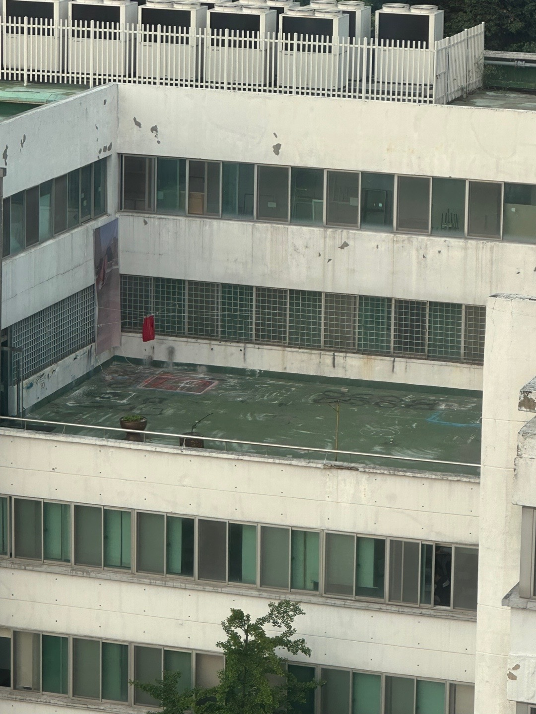
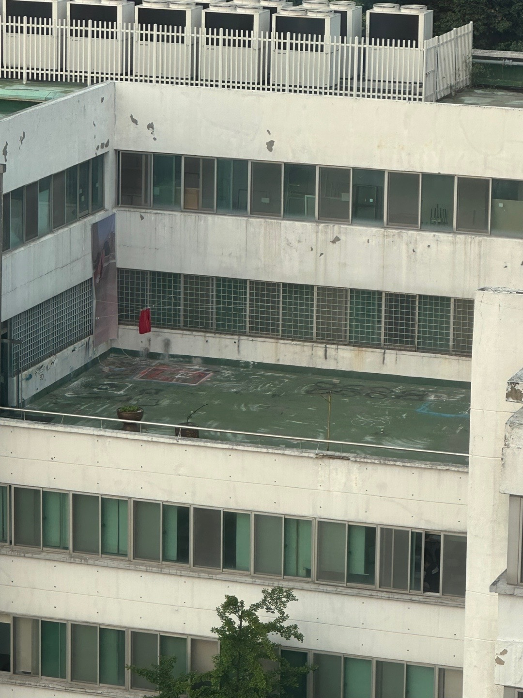

오염지도
하지만 대부분의 혁명의 씨앗들은 그 누구보다 강인하게 학교에 자리를 잡았다.
혁명에 동참하고 싶은 학우들이여, 학교의 수도시설을 적극 활용하여 혁명의 씨앗에 물을 주도록 하자!
가장 잔인한 것은 살인이 아닌 기만이다.


나는 들켜서는 안되는 한편, 누군가에게는 들켜야만 하는 이중적인 위치에 자리를 잡고있다.
화분이었던 재떨이에 나타난 상추처럼, 빨래처럼 보이지만 사실은 학우들에게 보내는 편지처럼, 현수막 속에서 지워졌지만 분명히 존재하는 상추를 가꾸는 사람처럼.


 
